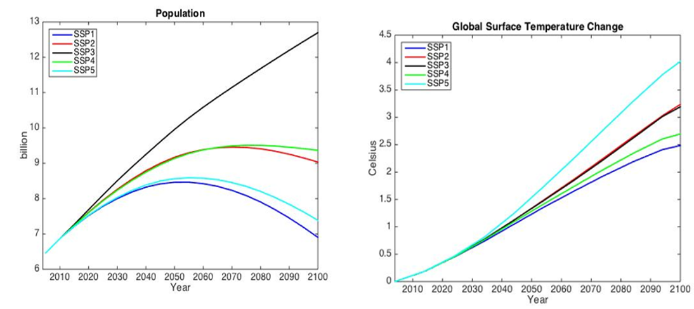
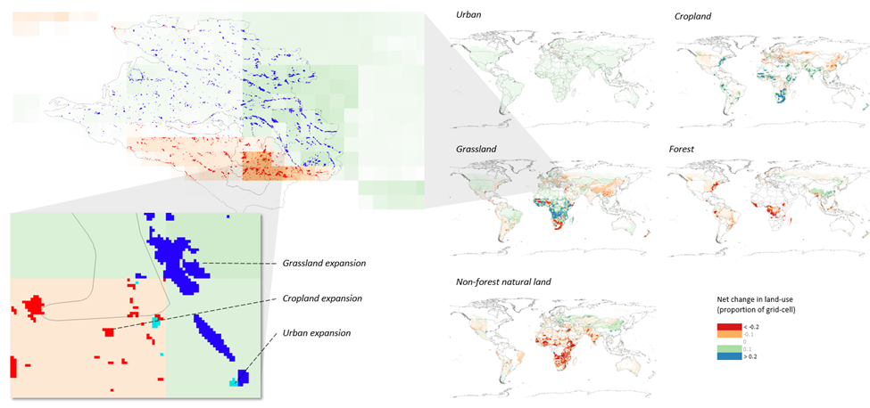
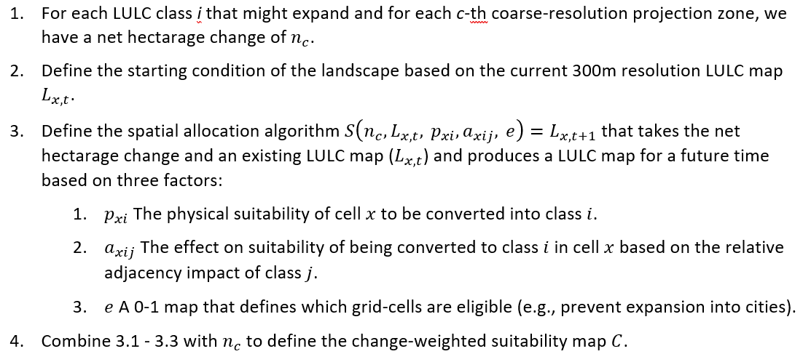
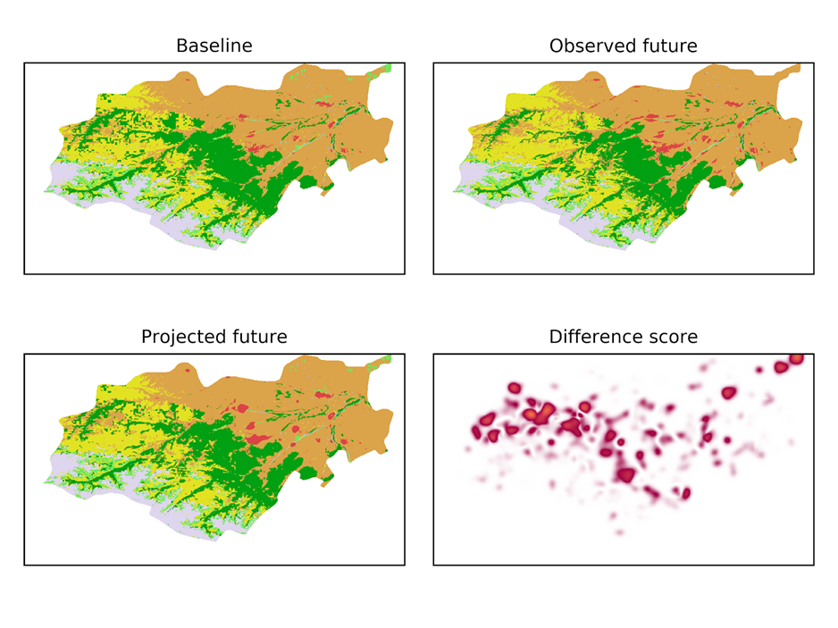

2. GTAP-InVEST Model Summary
In this section, we describe how we link together the models that underlie GTAP-InVEST and discuss the new elements added to each model to make this possible. This section assumes the reader is familiar with the underlying GTAP and InVEST models. If this is not the case, see Sections 4 and 5, which document these two models in more depth.
2.1. Overall model structure
GTAP-InVEST is based on several existing models, though a number of new advances were necessary to make the model linkage. These necessary advances fall into two categories: 1. modifications of the underlying models so that they compute what is needed by the other models; and 2., creation of “linkage” code that expresses the outputs of one model as inputs to another model. Figure S.2.1 summarizes the overall structure of the model.

Figure S.2.1: Overall model linkages within GTAP-InVEST
The first step in the model is to project how the economy will evolve between the base year and the terminal year while ignoring impacts from ecosystem services. We refer to this as GTAP Run 1 or the “economic projections run.” It is summarized in Column 1 of Figure S.2.1 (see SI Section 3 for details on the exact input assumptions). The economic projections run calculates a business-as-usual scenario to 2030 that does not yet account for ecosystem services (we label these results as BAU-noES throughout). Because many of the policies rely on detailed consideration of how changing market forces will endogenously drive land-use change and conversion of natural land into economically-utilized land, the GTAP model has expanded representation of heterogeneous land and can endogenously calculate land-use change at the GTAP-AEZ scale. See Section 2.2.3 for a description of how we created this new version of GTAP-AEZ. The results of GTAP Run 1 provide projections of regional land-use change for cropland, pastureland, managed forests and natural land. The next step in GTAP-InVEST is to downscale these regional results (Column 2) using the Spatial Economic Allocation Landscape Simulator (SEALS) from 341 regions to 8.4 billion grid-cells (10 arc-second resolution, or roughly 300 meters at the equator). This is necessary because the models of biodiversity and ecosystem services we used, specifically the Integrated Valuation of Ecosystem Services and Tradeoffs (InVEST) model, require very high-resolution data to capture local dynamics (Column 3). Finally, the outputs of InVEST are fed back into a second run of the economic model (Column 4), referred to as the GTAP Run 2, or the “ecosystem services impact run.” Run 2 assesses how changes in ecosystem services will have feedback effects on the 2030 economy. In our results, outputs from this second run are labeled with “allES” (or “aES” for short-name variables) to denote that the impacts on the economy from changed ecosystem services are now included. The difference between GTAP Run 1 and Run 2 identifies how much ecosystem services matter (see Figure 1 in the manuscript). The outputs of GTAP Run 2 provide detailed macroeconomic results described in figures 1-3 of the manuscript and in section 7 of this supplemental information.
2.2. Input Assumptions
The primary source of inputs for assumptions on exogenous drivers come from the Shared Socioeconomic Pathway (SSP) framework from Riahi et al. (2017) and the associated Representative Concentration Pathways (RCPs), such as for population and global surface temperature change (Figure S.2.2). We take population change, technology change (represented as total-factor productivity projections) and other exogenous factors from the literature, following the approach documented in a special issue of the Journal of Global Economic Analysis (Dellink et al., 2020).
Specifically, these economic drivers include future growth rates for key economic factors, namely Real GDP, Capital Stock, Population, Unskilled Labor and Skilled Labor from Econmap (v2.4) (Fouré et al., 2013) based on the SSP2 scenario. Sector specific productivity growth for Crops, Ruminants and Non-Ruminants are based on per annum growth rates from Ludena et al (2007) over 2001-2040. Because Ludena et al (2007) does not estimate the growth of the managed forestry sector, we infer growth in this sector based on global agricultural productivity growth as defined in Ludena et al (2007). We impose a 2% productivity growth rate for the Manufactures sector to reflect the productivity gap between the Manufactures and Service sectors (Chateau et al., 2020).

Figure S.2.2: Input Assumptions from the Shared Socioecononomic Pathways. Source: IIASA (2015). SSP Database 2012-2015. Preliminary scenarios. Note:Available from https://tntcat.iiasa.ac.at/SspDb
2.3. GTAP-AEZ economic methods
The variant of the GTAP model that we use as the starting point for our model extensions is GTAP-AEZ, which builds on the standard model and database by introducing competition for land resources across crops, pasture, and forestry, as well as heterogeneous land use and land endowments within each region and within each Agro-Ecological Zone (AEZ) suitable for a sector’s use. The AEZs are defined in terms of 60 day-long length-of-growing periods, of which there are six, each differentiated by climatic zone (tropical, temperate and boreal). We derive AEZ-level crop production information from Monfreda et al. (2008), while managed forest sector production is based on Sohngen et al. (2009). We draw on multiple sources for land cover information. We use cropland and pasture cover data from Ramankutty et al (2008), urban land cover data from Schneider et al (2009, 2010) and potential vegetation information from Ramankutty (1999). The GTAP-AEZ database is updated to the latest version of the standard GTAP database using national level data from FAOSTAT following the methods described in Baldos (2017). One purpose for defining AEZs is that it lets us specific region-specific endowments of land, which are used by producers as an input to production.
Figure S.2.3.1 shows the modified production structure in the GTAP AEZ. Note that these changes are limited to managed forestry, ruminant livestock and crops sectors - sectors that use land endowments. Following the standard GTAP model, we estimate sectoral output using a constant elasticities of scale (CES) production structure which minimizes cost of production by combining intermediate and value-added inputs. The former are raw commodity inputs used in the production process while the latter includes factors such as land, labor, capital and natural resources. Our model combines skilled and unskilled labor, land, capital and natural resources under the value-added input CES sub-nest, with land endowments in across AEZs pooled under the land input CES sub-nest. Supply of land across each crop sectors and across land cover types are illustrated in Figure S.2.3.2.
Figure S.2.3.1. Production structure in GTAP-AEZ

Figure S.2.3.2. Land supply in GTAP-AEZ
In the model, the regional household owns land endowments and maximizes total returns to land by allocating their endowment across different uses. Starting at the bottom of the constant elasticity of transformation (CET) function land supply nest (Figure S.2.3.2), the regional household allocates the land endowment within its AEZ to managed forestland, cropland and pastureland based on maximizing returns to land. Managed forestland represents land endowments for the forestry sector, while the ruminant livestock sector uses pastureland. Within the crops sector, the household can allocate available cropland for use in the production of each 8 GTAP crop aggregates, depending on changes in land rents for each use. The model computes returns to land endowments based on the cost shares in the database.
2.3.1. Modifications of GTAP-AEZ
In the original GTAP-AEZ model, we assume the supply of land in each AEZ is fixed, though different sectors are able to compete over how land will be used. This means that additional land demanded by one sector needs to come from other sectors. Although this method represented a great advance in the literature on making computable general equilibrium (CGE) models accurately represent land conversion, it is limited in its ability to assess new land being brought into economic use, converted from natural land cover. Our primary modification of GTAP-AEZ in this paper was to add land supply curves, uniquely identified and parameterized for each AEZ-Region, in order to endogenize land supply in the GTAP-AEZ model. Following the approach of Eickhout et al (2009), which the MAGNET model also uses (Woltjer and Kuiper, 2014), land supply in each AEZ is defined as a function of real land rental rates as well as an asymptote which captures maximum available land for use:

The alpha and beta parameters are taken directly from Woltjer and Kuiper (2014) and the maximum land available is calculated as described below. Using this specification, land supply increases when there are positive increases in land rents. Likewise, if land rents fall, then the supply of land also declines, and we assume that any land not being used is allocated back to natural cover. With this specification, it is possible to set aside land for natural use by reducing the maximum area of available land, as long as these reductions are relatively small (see Dixon et al. 2012).
The determination of maximum arable land is very important in this structure. Many existing approaches exist in the literature for defining arable land (e.g., from the Food and Agriculture Organization, but also from the authors of the MAGNET model (Woltjer et al. 2014)). In this paper, we updated the land-supply curves using more recent and higher resolution data on available land. We calculated this using 300 meter resolution data with global availability. In this approach, we also improved the consistency in land-use availability between the competing uses of cropland, pastureland and managed forest land.
Specifically, GTAP-InVEST calculates the land-supply curve for each region using the following approach. We combined data on soil suitability and soil-based growth constraints (Fisher et al., 2008), existing crop caloric yield on nearby areas (Johnson et al. 2016), topographic roughness (authors’ calculations, based on data from Hijmans et al. 2008), and existing LULC (based on the European Space Agency’s Climate Change Initiative data, henceforth the ESACCI). For the soils data, which are based on the Harmonized World Soils Database, the method excluded any land that had constraints worse than class 4 (where 1 is unconstrained and 7 is completely constrained). After eliminating land based on soil constraints, the methodology then further excluded the following areas: land that had less than 20 billion kilocalories produced within the 5 km of the target cell, land that had a topographic roughness index greater than 20, and land with an overall crop suitability lower than 30 percent. Finally, the methodology excluded urban, water, barren, ice and rocky land-use types. See the GTAP-InVEST GitHub repository for more details. This process resulted in AEZ-Region specific values as presented in the supplemental file land_supply_parameters.csv.
To download the full defintitions of the 18 AEZs, 37 aggregated GTAP regions and the corresponding ISO3 codes as a vector file (.gpkg), see here GTAP37_AEZ18_ISO3
2.4. SEALS downscaling methods
In order to analyze ecosystem services, we need to know where within the country the specific changes happen with sufficiently high-resolution data. To enable this, we downscale the regional projections of change produced by the GTAP Run 1 model to a fine (10 arc-second, ~300m) resolution using the Spatial Econometric Allocation Landscape Simulator (SEALS, published in Suh et al. 2020 and extended in Johnson et al. 2020, 2021).
To generate useful results, we also ensured that our downscaled results were consistent with medium-resolution land-use change products currently being used by the global sustainability community. Specifically, we used results reported by the Land-Use Harmonization 2 (LUH2), which provides yearly measures of land-use change for 13 classes under each of 5 different Shared Socioeconomic Pathway (SSP) scenarios used by IPBES, reported at a medium (30km) resolution. We combined the LUH2 data with the AEZ-Region results from GTAP Run 1 by scaling the medium resolution LUH2 data up/down in each AEZ-Region so that (1) the total exactly matched that projected by GTAP Run 1 and (2) within the AEZ-Region, the spatial distribution at the medium resolution matched that of the LUH2 data. See Johnson et al. (2023) for more details along with the code documenting this calculation in the GTAP-InVEST repository.
These results that combine the GTAP-AEZ projections with the LUH2 data, however, are still not at a fine enough resolution to be used in the InVEST ecosystem service tools. Thus, we used SEALS to downscale from the combined 30km LULC data described above to the necessary 300m resolution. Figure S.2.4.1 illustrates how SEALS downscales the medium resolution data to the finer scale. Specifically, the top panel of the figure shows the spatial distribution of five LUC transitions in the LUH2 data, focusing on grassland conversion, and then zooms in to show which 300m grid-cells change in the downscaled data. The bottom panel shows the projections for agricultural land-use change but illustrates both the contraction (brown) and expansion (green) that happens on the landscape. Note that while initially SEALS modeled the expansion of single land-use types, such as maize expansion (Suh et al. 2020), we expanded from the algorithm defined in Suh et al. so that the SEALS model can consider all land-use changes simultaneously.


Figure 2.4.1: Downscaling using the SEALS model
2.4.1. Allocation Algorithm
We report a simplified explanation of the SEALS algorithm for convenience, drawn from previous publications. See the specific publications for more details (e.g., Suh et al. 2020, Johnson et al. 2020, 2021). SEALS uses a simplified LULC classification scheme that is a hierarchically-defined subset of the ESACCI classes (ESA, 2017).The simplification was used because many relationships were not statistically different among similar class specifications (e.g., between deciduous broadleaf and deciduous needle-leaf forests).
| SEALS LULC Types | id | Combined ESA LULC Types |
| Urban | 1 | 190 |
| Cropland | 2 | 10, 11, 12, 20, 30 |
| Pasture/Grassland | 3 | 130 |
| Forest | 4 | 40, 50, 60, 61, 62, 70, 71, 72, 80, 81, 82, 90, 100 |
| Non-forest vegetation | 5 | 110, 120, 121, 122, 140 |
| Water | 6 | 210 |
| Barren or Other | 7 | 150, 151, 152, 153, 160, 170, 180, 190, 200, 201, 202, 210, 220 |
| No-data | 255 |
Table S.2.4.1: ESA LULC simplification scheme
SEALS allocates land-use change by identifying the net change of each LULC class required in each coarse region, then identifying a net change vector , where each entry represents the net change for the i-th land-use type in the coarse cell. The allocation algorithm then takes an n by i matrix of coefficients for how each n-th spatial input affects the probability of i-th expansion in each grid-cell. We provide an example of the table and specification of the functional forms in Table A-4.2. The coefficients actually used are obtained by iteratively solving the allocation algorithm to search for the parameters that minimize the difference between observed change and projected change.
SEALS Allocation Algorithm


2.4.2 Coefficients used
Table S.2.4.2. defines the specific coefficients used. These were established using the calibration algorithm described in the next section, averaging calibrated coefficients from 10 different sampled regions.
| spatial_regressor_name | type | class_1 | class_2 | class_3 | class_4 | class_5 |
| class_1_constraint | multiplicative | 0 | 0 | 0 | 0 | 0 |
| class_2_constraint | multiplicative | 1 | 0 | 1 | 1 | 1 |
| class_3_constraint | multiplicative | 1 | 1 | 0 | 1 | 1 |
| class_4_constraint | multiplicative | 1 | 1 | 1 | 0 | 1 |
| class_5_constraint | multiplicative | 1 | 1 | 1 | 1 | 0 |
| class_6_constraint | multiplicative | 0 | 0 | 0 | 0 | 0 |
| class_7_constraint | multiplicative | 1 | 1 | 1 | 1 | 1 |
| class_1_binary | additive | 0 | -0.032222222 | 0.013888889 | -0.013888889 | -0.016666667 |
| class_2_binary | additive | -0.027777778 | 0 | 0.016666667 | 0.011111111 | 0.004333333 |
| class_3_binary | additive | 0.005555556 | 0.018888889 | 0 | 0.041666667 | -0.026111111 |
| class_4_binary | additive | -0.019444444 | -0.016666667 | -0.002666667 | 0 | 0.033444444 |
| class_5_binary | additive | 0.01 | 0.144444444 | 0.060111111 | 0.02 | 0 |
| class_6_binary | additive | 0 | 0 | 0 | 0 | 0 |
| class_7_binary | additive | -1.119444444 | 0.001666667 | 0.126666667 | 0.061111111 | -0.023333333 |
| class_1_gaussian_1 | gaussian_parametric_1 | 1.713888889 | -1122.233444 | -11.13055556 | 0.041666667 | -1122.241667 |
| class_2_gaussian_1 | gaussian_parametric_1 | 0.105555556 | 0.333444444 | 0.022222222 | 0 | -11.24444444 |
| class_3_gaussian_1 | gaussian_parametric_1 | 0.054444444 | 0.005444444 | 0.38 | 0.018222222 | 0.085555556 |
| class_4_gaussian_1 | gaussian_parametric_1 | -0.122222222 | 1111.065556 | -0.011 | 0.276666667 | -0.022233333 |
| class_5_gaussian_1 | gaussian_parametric_1 | 0.010888889 | 0 | 0.019444444 | -0.122222222 | 0.466666667 |
| class_6_gaussian_1 | gaussian_parametric_1 | 0.036555556 | -112.2027778 | -112.24 | -1.105555556 | -1133.322333 |
| class_7_gaussian_1 | gaussian_parametric_1 | -0.127777778 | -112.2555556 | -1112.144444 | -1111.133333 | 0.005555556 |
| class_1_gaussian_5 | gaussian_parametric_1 | -0.072222222 | -11.52222222 | -111.2638889 | -0.093333333 | -0.087777778 |
| class_2_gaussian_5 | gaussian_parametric_1 | 0.068888889 | 0.162333333 | -0.016666667 | 0.122222222 | 0.065555556 |
| class_3_gaussian_5 | gaussian_parametric_1 | 0.100222222 | -0.025 | 0.431111111 | -0.026677778 | -0.041666667 |
| class_4_gaussian_5 | gaussian_parametric_1 | 0.133222222 | 0.367777778 | 0.076333333 | 0.281777778 | 0.113333333 |
| class_5_gaussian_5 | gaussian_parametric_1 | 0 | -0.073111111 | 0.024444444 | -0.005555556 | 0.152777778 |
| class_6_gaussian_5 | gaussian_parametric_1 | 0.091666667 | 0.005 | -1111.105444 | -1.092777778 | -0.002222222 |
| class_7_gaussian_5 | gaussian_parametric_1 | 0.045555556 | 0.15 | -1111.077778 | -0.008333333 | -110.89 |
| class_1_gaussian_30 | gaussian_parametric_1 | -0.066666667 | -0.073333333 | 0.077777778 | -0.026111111 | 0 |
| class_2_gaussian_30 | gaussian_parametric_1 | 0.011111111 | 0.034888889 | -0.081666667 | -0.016666667 | -0.037777778 |
| class_3_gaussian_30 | gaussian_parametric_1 | -0.017222222 | -0.006 | 0.308333333 | 0.009444444 | 0.024333333 |
| class_4_gaussian_30 | gaussian_parametric_1 | -0.016111111 | 0.155555556 | 0.108888889 | 0.056777778 | 0.153444444 |
| class_5_gaussian_30 | gaussian_parametric_1 | 0.005555556 | -0.021111111 | 0.137222222 | 0.143444444 | 0.105555556 |
| class_6_gaussian_30 | gaussian_parametric_1 | -0.021111111 | 0.036555556 | 0.152444444 | 0 | 0.055555556 |
| class_7_gaussian_30 | gaussian_parametric_1 | 0.025 | 1109.978889 | 0.204444444 | -1.080555556 | -0.034555556 |
| soil_organic_content_1m_30s | additive | 0.027777778 | -0.15 | 110.9777778 | -111.14 | -0.027777778 |
| bio_12 | additive | 11.11944444 | -0.994444444 | 1.14 | -1.075 | 11.00444444 |
| alt | additive | -0.104444444 | 0.085 | -0.024888889 | -0.037788889 | 0.01 |
| bio_1 | additive | -0.022111111 | 0.044444444 | -0.011111111 | -0.01 | -0.001111111 |
| minutes_to_market_30s | additive | 0.016122222 | 0.21 | 0.005555556 | 1111.077778 | -0.034333333 |
| pop_30s | additive | 0 | 0 | 0 | 0 | 0 |
| bulk_density_1m_30s | additive | 1.15 | 1.122222222 | -0.016666667 | 22.18444444 | -11.1 |
| CEC_1m_30s | additive | 0 | -0.016666667 | 0 | 111.0722222 | 0 |
| clay_percent_1m_30s | additive | -0.051111111 | 0.02 | -0.186111111 | -0.046222222 | 1.084333333 |
| ph_1m_30s | additive | 0 | 0.1 | 0 | 0 | 0 |
| sand_percent_1m_30s | additive | 0.034444444 | 0.018333333 | -0.037777778 | -0.048888889 | -0.001111111 |
| silt_percent_1m_30s | additive | -0.012777778 | -0.165 | 0 | -0.059011111 | -0.146111111 |
Table S.2.4.2. Coefficients used in the SEALS algorithm
2.4.3. Calibration
A key component in SEALS is that it downscales according to observed relationships present in time-series input data. SEALS uses a spatial allocation approach that has been calibrated on the ESACCI 1992-2015 time series using an iterative Gaussian L1-loss function minimization approach. The approach is documented in Figure S.2.4.3.1. as per the following algorithm:
Define a baseline condition (Panel A, using the year 2000 for this example).
Define a projection year in the set of observed years after the baseline year (2010), shown in Panel B, and calculate the net-change between the two years for each coarse resolution (30km) grid-cell. This defines the amount of change in each LULC class that our allocation algorithm will predict.
Allocate the net change of each LULC class using only the baseline map and a spatial allocation algorithm, S(p1), where p1 is the parameter set used in the allocation and is initially set to an arbitrary value.
Calculate how accurate the projected LULC map for 2010 (Panel C) compares to the observed 2010 LULC map. Specifically, calculate the difference score, which is the summation of 5 L1-difference functions, one for each LULC transition, that calculates how different (in terms of Gaussian-blurred distance) each class is in the projected map compared to the observed map. This generates a score for the quality of fit for the current set of parameters (Panel D).
Iteratively for each parameter in p1_i, increase the parameter by X percent (initially 10), rerun step 4 with the new parameter, observe the new similarity score, then decrease it by 10 percent and rerun.
After calculating the change in fit from each parameter increase and decrease in Step 5, identify which change had the greatest improvement in the similarity score. Update the parameter set to include the single best change, and then repeat Steps 3-6 until no additional improvements can be made.
Figure 2.4.3.2. shows more detail on the calibration process, highlighting where specific transitions are projected versus where they actually happen, along with the difference score implied.

Figure 2.4.3.1. SEALS calibration process

Figure 2.4.3.2. Assessment of prediction quality-of-fit for 1 LULC class
2.4.4. Current Limitations within SEALS
Due to the computationally heavy nature of calibration, the calibration was only done on a subset of the input data. Subsequent work can improve this by running on more (or potentially all) regions and applying unique values for each region downscaled, instead of averaging the coefficients.
Additionally, in our downscaling approach, we chose to match exactly the results from the LUH2 project. This had some downsides, such as locating massive agricultural expansion in the northern Sahara. In locations where the change projected by LUH2 is well outside any observed changes, the calibration is not effective, and visible artifacting is present. In these locations, no allocation method based on the sparse observed data is likely to produce realistic outputs unless the underlying input LUH2 data is modified. We chose not to modify the input LUH2 data in these locations in order to stay consistent with existing approaches, though other applications of this data may benefit from versions that modify the input data. Future research directions should include dynamic updating between the coarse and fine resolutions to resolve the underlying problem.
It is also important to note that the modelling outputs (including LULC change maps, InVEST outputs, and GTAP outputs) are not meant to be accurate predictions of future change. Instead, they are illustrations of possible future outcomes given the assumptions used. Furthermore, the modelling approaches used in this project are a first step in exploring how the integration of ecosystem service models (InVEST) and economic models (GTAP) can be connected to help explore the implications of large-scale implementation of global conservation goals, and these methods will be further refined over time.